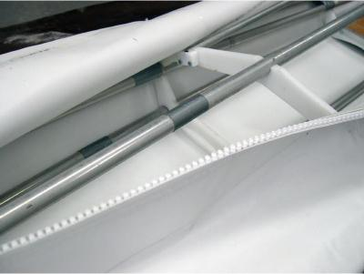
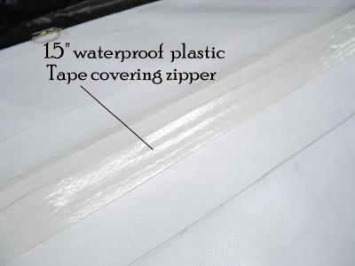
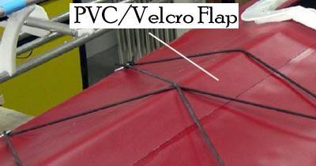

| Zipper Assembly (2 of 7) | Menu Last Page Next Page |
|
  |
Overview (Cont)
3. Unzip completely to expose the deck skin underneath. Using a razor knife, cut open the PVC deck to expose the lacing remaining from the hull skinning process. Remove the lacing.
4. A simple method of waterproofing the zipper is covering it with tape. Colored or transparent duct tape holds up well in a paddling environment, including "rolling". The tape can be removed and replaced as needed. Another method is to install a Velcro flap over the zipper or to use the Velcro flap in place of the zipper. This method will be covered in the next section. (Velcro Flap)
 |